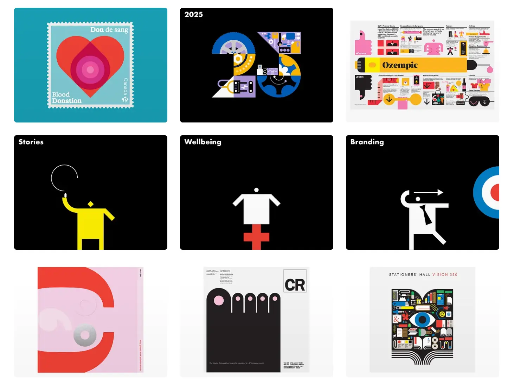

Grundini
- Личные сайты и портфолио
- Дизайнер
- Минимализм
- Игривый
- Сайт жив

Что это
Портфолио британского информационного дизайнера Питера Гранди и его студии Grundini. Живёт на кастомном домене Dribbble Pro: короткая шапка профиля и сетка из 24 работ на белом фоне, где выразительность создают сама графика и плотная инфографика. Сайт-портфолио дизайнера Питера Гранди, который делает увлекательные визуализации данных с метафорами и намеренным декоративным украшательством. С помощью своего игривого стиля ему удаётся просто рассказывать о сложном.
Что смотреть в первую очередь
Смотреть как пример портфолио на чужой платформе: сайт отдаёт только сетку работ, а вся история дизайнера осталась в мета-описании. Отдельно полезна палитра и манера работ — плоские пиктограммы на контрастных плашках и плотная инфографика.
Чем интересен
- Это не самостоятельный сайт: канонический адрес страницы — dribbble.com/Grundini, robots.txt и все ресурсы принадлежат Dribbble, собственного кода у владельца на странице нет.
- Биография дизайнера на 859 символов — с историей студии Grundy & Northedge и цитатой — существует только в мета-описании; в теле страницы её нет, посетитель видит лишь имя и подпись «Peter Grundy : Let me explain».
- У каждой плитки в разметку зашит доминирующий цвет работы как фон плейсхолдера — из-за этого сетка грузится без белых провалов, а палитра автора видна прямо в HTML.
- Апекс-домен без www отдаёт 404, страницы /about, /contact и /work тоже 404, а ссылка «Next →» уводит на dribbble.com/my-playbook, который требует входа.
- Все инфографики — растровые картинки: на странице ноль canvas, video и iframe, то есть живых диаграмм в вебе здесь нет, хотя работы как раз про визуализацию данных.
- Счётчиков аналитики в разметке нет; есть только служебный модуль платформы, умеющий пушить события в dataLayer, но контейнер не подключён.
Паспорт
- Домен
- grundini.com
- Тип сайта
- Портфолио
- Категории
- Личные сайты и портфолио
- Подкатегории
- Дизайнер
- Для кого
- Дизайнерам, Маркетологам, Преподавателям
- Стиль
- Минимализм, Игривый
- Язык
- Английский
- Страна
- не указано
- Автор
- Питер Гранди (Grundini)
- Год
- 2006
- Добавлен в коллекцию
- 30.09.2026
Палитра
-
#FAFAFA— 43% кадра -
#000000— 31% кадра -
#179BAF— 5% кадра -
#EACEDE— 4% кадра -
#E94034— 4% кадра
- Режим
- Светлая
- Цвет фона
- Нейтральный
Технологии с доказательствами
- Dribbble Pro (кастомный домен профиля, а не собственный сайт) — link rel=canonical на dribbble.com/Grundini, og:site_name = Dribbble, подвал «Powered by Dribbble», в разметке data-owner-id и data-base-url
- Ruby on Rails (бэкенд платформы) — meta csrf-param authenticity_token, заголовок X-Runtime, cookie _dribbble_session
- OpenResty (nginx) — заголовок ответа Server: openresty/1.25.3.2
- AWS EC2, регион us-east-1 — A-запись 34.235.13.16 с PTR ec2-34-235-13-16.compute-1.amazonaws.com
- Vite (сборка фронтенда платформы) — около 30 ссылок modulepreload на cdn.dribbble.com/assets/vite/assets/*.js
- jQuery — подключён jquery.min-*.js с CDN Dribbble, инлайн-скрипты начинаются с $(function(){…})
- lazysizes и адаптивные изображения — class="lazyload" с data-srcset и data-sizes=auto, srcset с дескрипторами 320w…450w и параметром format=webp
- Shoelace (веб-компоненты) — preload shoelace-overrides-*.css в сборке Vite
- Шрифт Proxima Nova Dribbble — body.proxima-nova-dribbble{font-family:'Proxima Nova Dribbble',…} и @font-face с cdn.dribbble.com